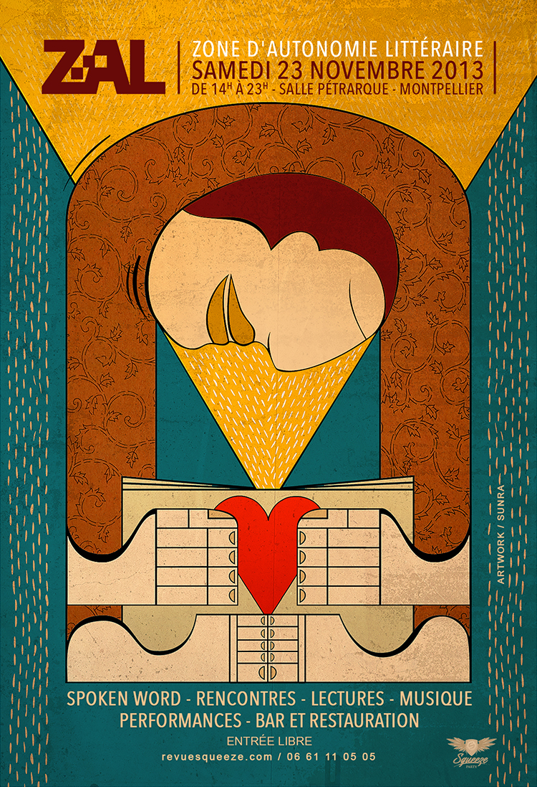

Vidéo : l'écriture, la vie, le génie français

Bande-annonce de la ZAL 2013 montée avec rythme par le sépulcral Patrick Gómez Ruiz. On se retrouve le 23 novembre, 15 heures, à Montpellier.
Suite | 2013 | Sommaire | Texte publié vendredi 8 novembre 2013